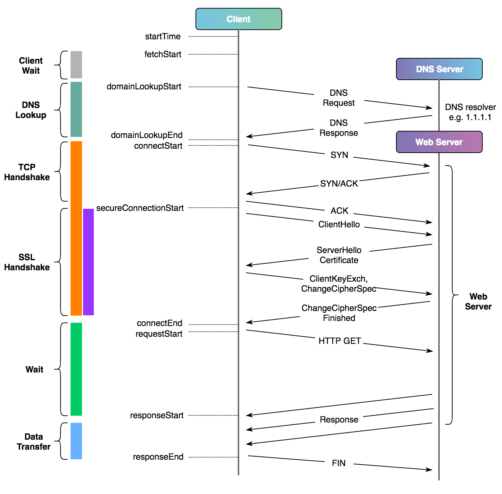
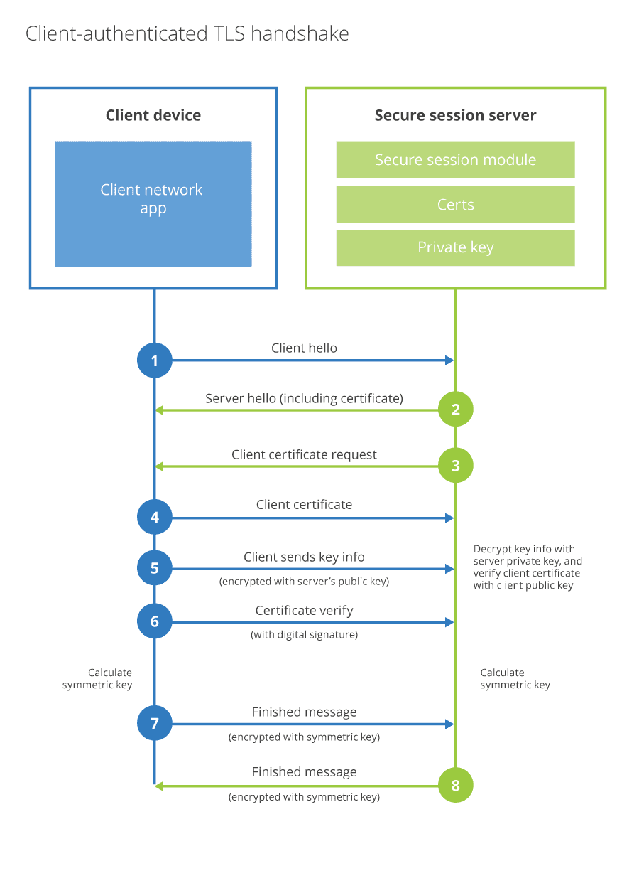

Overview
This is a guide for sharing tips and tricks in utilizing Cygwin, an emulated Linux environment in Windows for network debugging purposes.
It includes a set of practical examples on how to utilize the tools for debugging networking problems.
The source code of this guide can be found here.
Installation
The following instructions are to install Cygwin on a Windows machine with a user with no administrative permissions.
-
Navigate to Cygwin Install Page and download the 64 bit version (preferred) of the executable (setup-x86_64.exe).
-
Open up a Windows PowerShell terminal.
-
Navigate to the executable directory (by default, the Downloads folder).
-
Type in
setup-x86_64.exe --no-adminand the setup user interface should pop. This command forces the installation to be in user mode, rather than administrative mode. -
During the setup sequence, the following will be prompted: Setup Screen
- Click “Next”.
Choose a Download Source
- Select ‘Install from Internet’, Click “Next”.
Select Root Install Directory
- By default, it’ll be installed to c:\cygwin and it’ll be for all users on the machine.
- Click “Next”.
Select Local Package Directory
- Click “Next”.
Select Your Internet Connection
- Click “Next”. By default, it will simply use your system proxy settings.
Choose a Download Site
This refers to where cygwin packages of open source software will be downloaded from. It is best to choose a closest location to you, and a location that you trust downloading binaries from.
I generally choose the mirror source of Virginia Tech (VT) or Rochester Institute of Technology (RIT).
- Once selected, click “Next”.
Select Packages
- Click “Next”.
Review and confirm changes
- Click “Next”.
Progress
- Wait for install to complete
Create Icons
- Feel free to create an icon on Desktop.
- Click ‘Finish’
-
You should now be able to open up your Cygwin terminal.
Tools
Cygwin is a collection of open source tools providing Linux capabilities to Windows.
The following tools will provide insights into client and server behaviors when diagnosing and troubleshooting network issues.
Aside from tools within Cygwin, we often use other Linux networking tools to diagnose network problems. The table below shows where each tool comes from on each platform: a Cygwin package on Windows, and a dnf or apt package on Fedora and Ubuntu. N/A in the Cygwin column means the tool is not packaged for Cygwin. Several of those have native Windows builds instead; each tool’s own page has the details.
Open Source Tools
| Command Line Tool | Cygwin Package | Fedora (dnf) | Ubuntu (apt) | Usage |
|---|---|---|---|---|
| curl | curl | curl | curl | command line tool for sending/receiving web requests |
| dig | bind-utils | bind-utils | bind9-dnsutils | powerful DNS lookup tool, similar to nslookup |
| delv | bind-utils | bind-utils | bind9-dnsutils | DNS lookup with full DNSSEC validation and tracing |
| drill | N/A | ldns-utils | ldnsutils | dig-like DNS tool with DNSSEC signature chasing |
| git | git | git | git | version control; useful for debugging SSH/TLS transport issues |
| ipcalc | ipcalc | ipcalc | ipcalc | IP addressing calculator for subnet in CIDR notation |
| iperf3 | N/A | iperf3 | iperf3 | a highly efficient network traffic generator |
| mtr | N/A | mtr | mtr-tiny | a re-implementation of traceroute for continuous monitoring |
| netcat | nc, nc6 | nmap-ncat | netcat-openbsd | swiss army knife for testing network connectivity |
| netstat | Windows netstat.exe | net-tools (or ss) | net-tools (or ss) | show listening ports and open connections |
| ntttcp | N/A | build from source | build from source | Microsoft’s network throughput benchmark |
| openssl | openssl | openssl | openssl | toolkit for testing SSL/TLS connections and certificates |
| openssh | openssh | openssh-clients | openssh-client | a suite of utilities for the SSH protocol (ssh, sftp, scp) |
| rsync | rsync | rsync | rsync | resumable, bandwidth-limited file synchronization over SSH |
| strace | N/A | strace | strace | trace the system calls a process makes (Linux) |
| tcpdump | N/A | tcpdump | tcpdump | swiss army knife for capturing network traffic |
| testssl | runs in Cygwin bash | testssl | testssl.sh | scan a webserver’s TLS protocols, ciphers, and certificates |
| trippy | N/A | copr or cargo | PPA or cargo | a network tool that uses a combination of ping and traceroute |
| unfrl/dug | N/A | GitHub .rpm | GitHub .deb | DNS lookup tool on global DNS servers to check DNS propagation |
| watch | procps | procps-ng | procps | re-run a command on an interval and watch its output |
| whois | whois | whois | whois | a domain tool for looking up ownership of domains or IPs |
Curl
curl is the de-facto command line tool for sending and receiving data over URLs. For network debugging it is the fastest way to answer a few recurring questions: is the website up, where does the time go in a request (DNS, TCP, TLS, first byte), which certificate is the server presenting, and does the problem follow a particular IP or proxy.
Availability
| Platform | How to get it |
|---|---|
| Windows (Cygwin) | install the curl package |
| Windows (native) | curl.exe ships with Windows 10 (1803+) and Windows 11 |
| Fedora | sudo dnf install curl (usually preinstalled) |
| Ubuntu / Debian | sudo apt install curl |
One thing to know before comparing results across platforms: the native
Windows curl.exe uses the Schannel TLS backend and the Windows certificate
store, while Cygwin and Linux builds typically use OpenSSL with a
ca-certificates bundle. If a site verifies on one and fails on the other,
suspect the trust store, not the network.
Curl by Example
- Test whether a website like google.com is providing you with a HTTP 200 response
curl -sI https://www.google.com | head -n 1
- Get the HTTP status code only when testing a website
curl -s -o /dev/null -w '%{http_code}\n' https://www.google.com
- Break down where the time goes in a request (DNS vs connect vs TLS vs first byte)
curl -s -o /dev/null -w 'dns: %{time_namelookup}s\nconnect: %{time_connect}s\ntls: %{time_appconnect}s\nfirst byte: %{time_starttransfer}s\ntotal: %{time_total}s\n' https://www.google.com
- Run curl via a SOCKS proxy. The
socks5h://scheme (note theh) makes the proxy resolve the domain name instead of resolving it locally. Use it when the destination is only resolvable from the far side of the proxy.
curl -vvvx socks5h://localhost:4020 https://www.google.com
- Setting up curl with a different set of trusted authority bundle
curl -sv --cacert internal-root-ca.pem https://auth.example.com
- Testing with mTLS (present a client certificate to the server; see Network Basics for how the mTLS handshake works)
curl -sv https://auth.example.com --cert example.pem --key key.pem
Pull HTTP response headers only
curl -sI https://www.yahoo.com 2>&1
Force resolution to particular IP on specific port
This keeps SNI and the Host header correct while pinning the connection to one address. Useful for testing a single backend behind a load balancer, or a server whose DNS record does not exist yet:
curl -vv https://dns.google.com --resolve dns.google.com:443:8.8.8.8
Continuous monitoring one-liners
- Continuously check https://fonts.bunny.net every 10 seconds, with a total timeout of 3 seconds per attempt. Use Ctrl+C to kill.
while true; do curl -s -o /dev/null -w '%{http_code}\n' --max-time 3 https://fonts.bunny.net; sleep 10; done
- Same idea, but forcing IPv4 and a connection timeout of 10 seconds, printing the HTTP status line:
while true; do
curl -s -4 https://fonts.bunny.net \
--connect-timeout 10 \
--no-progress-meter -D - -o /dev/null | head -n 1;
sleep 10;
done
- With a timestamp on each line (
tscomes from themoreutilspackage):
while true; do
curl -s -4 https://fonts.bunny.net \
--connect-timeout 10 \
--no-progress-meter -D - -o /dev/null | head -n 1 | ts;
sleep 10;
done
Command for debugging
- Use badssl.com to test client behavior against known-bad TLS configurations (expired, self-signed, wrong host, weak ciphers):
curl -sv https://expired.badssl.com/
curl -sv https://self-signed.badssl.com/
curl -sv https://wrong.host.badssl.com/
Delv
delv (domain entity lookup and validation) is dig’s DNSSEC-aware sibling from BIND 9. Where dig shows you the raw DNS answer, delv performs full DNSSEC validation itself and tells you why a chain of trust fails. That is exactly what you need when a domain works on one resolver but returns SERVFAIL on a validating one.
Availability
| Platform | How to get it |
|---|---|
| Windows (Cygwin) | included in the bind-utils package |
| Fedora | sudo dnf install bind-utils |
| Ubuntu / Debian | sudo apt install bind9-dnsutils |
Examples
- Validate a record and show the validation result (
; fully validatedor; unsignedin the output):
delv www.cdc.gov A
- Show the full validation logic step by step with
+vtrace, and format multi-line records readably with+multi. Querying the same TLSA (DANE) record through several public resolvers tells you whether a DNSSEC problem lives in the zone itself or in one resolver’s cache:
delv @1.1.1.1 cdc.gov TLSA +multi +vtrace
delv @8.8.8.8 cdc.gov TLSA +multi +vtrace
delv @62.149.128.4 cdc.gov TLSA +multi +vtrace
delv @208.67.220.220 cdc.gov TLSA +multi +vtrace
delv @208.67.222.222 cdc.gov TLSA +multi +vtrace
delv @185.228.169.9 cdc.gov TLSA +multi +vtrace
- See what a broken domain looks like. Instead of a bare SERVFAIL, delv prints the specific failure (expired signature, missing DS record, bogus chain):
delv dnssec-failed.org A +rtrace
Rapid Verification
Web-based tools for cross-checking a DNSSEC problem you found with delv:
- DNSViz, which draws the whole chain of trust
- Verisign DNSSEC Debugger
- Ianix DNSSEC Outages
Dig
dig (domain information groper) is the standard DNS lookup tool from BIND. Reach for it first when a name does not resolve, resolves to the wrong address, or resolves differently depending on which resolver you ask.
Availability
| Platform | How to get it |
|---|---|
| Windows (Cygwin) | install the bind-utils package |
| Windows (native) | no official build; nslookup or PowerShell Resolve-DnsName are rough equivalents |
| Fedora | sudo dnf install bind-utils |
| Ubuntu / Debian | sudo apt install bind9-dnsutils (older releases: dnsutils) |
Examples
- Just the answer, no noise:
dig +short www.google.com
- Query a specific record type:
dig +short www.google.com AAAA
dig +short google.com MX
dig +short google.com TXT
- Ask a specific resolver. Comparing your local resolver against a public one is the quickest way to spot split-horizon DNS or a stale cache:
dig @8.8.8.8 www.google.com
dig @1.1.1.1 www.google.com
- Reverse lookup of an IP:
dig -x 8.8.8.8 +short
- Trace the delegation from the root servers down. This shows which nameserver actually hands out the answer:
dig +trace www.google.com
- Check the SOA serial on each authoritative nameserver to spot a zone change that has not propagated:
dig +nssearch google.com
- Watch a record continuously (for example, while waiting for a DNS change to propagate). Use Ctrl+C to kill.
while true; do dig +short www.va.gov; sleep 5; done
Drill
drill is a DNS lookup tool from NLnet Labs’ ldns library, built as a dig replacement with DNSSEC support baked in. Day to day it behaves like dig. The reason to learn it is the one trick dig lacks: chasing a DNSSEC signature chain from a record all the way up to the root.
Availability
| Platform | How to get it |
|---|---|
| Windows (Cygwin) | not packaged for Cygwin; use dig / delv instead |
| Fedora | sudo dnf install ldns-utils |
| Ubuntu / Debian | sudo apt install ldnsutils |
Examples
- Basic lookup, dig-style:
drill www.google.com
drill @8.8.8.8 google.com TXT
- Reverse lookup:
drill -x 8.8.8.8
- Trace a name from the root servers down (like
dig +trace):
drill -T www.google.com
- Chase the DNSSEC signature chain from the record up to the root, printing
every DNSKEY/DS link along the way (
-Drequests DNSSEC records,-Schases the chain):
drill -DS www.cdc.gov
Dug
dug is a global DNS propagation checker: it queries hundreds of public DNS servers around the world at once and reports what each one answers. Use it after a DNS change to see how far the new record has spread, or to detect regional DNS poisoning and filtering, where a domain resolves differently by country.
Availability
dug is a .NET application distributed from GitHub releases. There is no Cygwin, dnf, or apt package in the standard repositories.
| Platform | How to get it |
|---|---|
| Windows | download the Windows binary from GitHub releases (runs natively; usable from a Cygwin terminal) |
| Fedora | download the .rpm from GitHub releases |
| Ubuntu / Debian | download the .deb from GitHub releases |
Examples
- Quick propagation check with the pretty default output:
dug vaccines.gov
- Query 500 servers worldwide with retries, exporting everything to CSV for analysis in a spreadsheet (which countries see the old record, response times, DNSSEC status, errors):
dug vaccines.gov --retries 10 --server-count 500 --output-format CSV --output-template ipaddress,countrycode,city,dnssec,reliability,continentcode,countryname,countryflag,citycountryname,citycountrycontinentname,responsetime,recordtype,haserror,errormessage,errorcode,value > vaccines.gov-output.csv
Git
git is not a network tool, but git fetches and pushes fail for network reasons all the time: SSH key problems, TLS interception by corporate proxies, blocked ports. Git has built-in knobs that expose what its transport (SSH or HTTPS) is actually doing.
Availability
| Platform | How to get it |
|---|---|
| Windows (Cygwin) | install the git package |
| Windows (native) | Git for Windows |
| Fedora | sudo dnf install git |
| Ubuntu / Debian | sudo apt install git |
Debugging Git over SSH
Make git’s underlying ssh invocation verbose. The output shows which key is offered, which host key is received, and where authentication fails:
GIT_SSH_COMMAND="ssh -vvv" git clone <REPO_SSH_URL>
Test SSH authentication to the host directly, without git:
ssh -T git@github.com
Debugging Git over HTTPS
Show the full HTTP conversation including TLS handshake and proxy usage:
GIT_CURL_VERBOSE=1 GIT_TRACE=1 git clone <REPO_HTTPS_URL>
Point git at a corporate CA bundle when a TLS-intercepting proxy breaks certificate verification (prefer this over disabling verification):
git config --global http.sslCAInfo /path/to/corporate-ca-bundle.pem
Interesting Links
Ipcalc
ipcalc is a subnet calculator: give it an address in CIDR notation and it prints the network address, netmask, broadcast address, and usable host range. It saves you from doing binary math in your head while reading firewall rules or cloud VPC definitions.
Beware that several unrelated programs share the name. Fedora ships its own
ipcalc, while Debian and Ubuntu ship a Perl version with different output
and flags. The examples below work on both, but check ipcalc --help on
your system.
Availability
| Platform | How to get it |
|---|---|
| Windows (Cygwin) | install the ipcalc package |
| Fedora | sudo dnf install ipcalc |
| Ubuntu / Debian | sudo apt install ipcalc (or sipcalc for an alternative) |
Examples
- What network does this host live in, and what is the usable range?
ipcalc 10.130.75.80/26
On Debian/Ubuntu’s ipcalc this prints the network (10.130.75.64/26), the
broadcast address (10.130.75.127), and the 62 usable hosts in between.
Run it on two addresses and compare the network lines to settle whether
they are in the same subnet.
- Same question for a /22 you see in a cloud VPC:
ipcalc 172.31.48.0/22
Iperf3
iperf3 measures the maximum achievable bandwidth between two machines. Unlike most tools in this guide, it has to run on both ends: one side acts as a server, the other connects to it as a client. Run it when you need to know whether the link itself is slow or the application on top of it is.
Availability
| Platform | How to get it |
|---|---|
| Windows (Cygwin) | not packaged for Cygwin |
| Windows (native) | unofficial builds from iperf.fr or winget / chocolatey |
| Fedora | sudo dnf install iperf3 |
| Ubuntu / Debian | sudo apt install iperf3 |
Examples
- On the server side (listens on TCP/UDP port 5201 by default, so open that port in the firewall):
iperf3 -s
- On the client side, run a 10 second TCP throughput test:
iperf3 -c <server IP>
- Measure the reverse direction (server sends, client receives) without swapping roles. Asymmetric links are common, so test both directions:
iperf3 -c <server IP> -R
- Use 4 parallel streams for 30 seconds. Parallel streams do a better job of saturating high-bandwidth, high-latency links:
iperf3 -c <server IP> -P 4 -t 30
- UDP test at a fixed 100 Mbit/s rate. The report includes jitter and packet loss, which TCP tests hide:
iperf3 -c <server IP> -u -b 100M
- Machine-readable output for graphing later:
iperf3 -c <server IP> --json > result.json
Public Servers
When you do not control the far end, a list of volunteer-run public iperf3 servers is maintained at iperf3serverlist.net.
Netcat
netcat (nc) is the swiss army knife for raw TCP/UDP connectivity: it opens
a connection (or listens for one) and pipes bytes. Because there is no
protocol on top to confuse things, it isolates the most basic question in
network debugging: can I reach that host on that port at all? In handshake
terms (see Network Basics), a successful nc -vz
means the TCP three-way handshake completed.
Availability
| Platform | How to get it |
|---|---|
| Windows (Cygwin) | install the nc package (also nc6) |
| Fedora | sudo dnf install nmap-ncat (provides nc) |
| Ubuntu / Debian | sudo apt install netcat-openbsd |
Versions
Several incompatible implementations share the nc name: the original/GNU
netcat, the OpenBSD rewrite (Ubuntu’s default, adds IPv6 and UNIX sockets),
and nmap’s ncat (Fedora’s default, adds TLS and proxying). Their flags
differ. If an example below fails, run nc -h to see which one you have.
Examples
Simple port test (-v verbose, -z scan only, do not send data):
- NC via TCP with a 3 second timeout
nc -vz -w 3 <destination IP> 443
- NC via UDP with a 3 second timeout. Treat UDP “success” with suspicion: it only means nothing actively refused the packet, since UDP has no handshake to confirm delivery.
nc -vz -u -w 3 <destination IP> 443
- Continuous NC via TCP with a 3 second timeout every 5 seconds:
watch -n 5 nc -vz -w 3 <destination IP> 443
or with a plain shell loop:
while true; do nc -vz -w 3 <destination IP> 443; sleep 5; done;
Listen on a port
Listening is the other half of debugging connectivity. Run a listener on the destination, connect from the source, and you have tested the path without involving any real application.
- Listen on TCP port 8080, then from the other machine connect with
nc <listener IP> 8080. Anything typed on one side appears on the other:
nc -l 8080
- Quick one-shot file transfer (start the receiver first, then the sender):
nc -l 9000 > received-file # on the receiver
nc <receiver IP> 9000 < file # on the sender
Admin Privilege
Admin privilege (ex. sudo) is needed when listening on a privileged port between 1-1024.
For example, the following will require sudo:
sudo nc -l 443
Netstat
netstat shows the sockets currently open on the local machine: which ports are listening, which connections are established, and (with privileges) which process owns each one. Run it when a service refuses connections and you want to confirm it is actually listening, or when you want to see what a machine is talking to.
On modern Linux, netstat (from net-tools) is considered legacy; ss from
the iproute2 package is faster and always installed. Windows ships its
own native netstat.exe, which works fine from a Cygwin terminal, so there
is no separate Cygwin netstat package.
Availability
| Platform | How to get it |
|---|---|
| Windows (Cygwin) | use the native Windows netstat.exe (works inside the Cygwin terminal) |
| Fedora | sudo dnf install net-tools (or use ss, preinstalled) |
| Ubuntu / Debian | sudo apt install net-tools (or use ss, preinstalled) |
Examples (Linux)
- Show established SSH connections, with the owning process
(
-tTCP,-nnumeric,-pprocess,-aall):
sudo netstat -tnpa | grep 'ESTABLISHED.*sshd'
- What is listening, on which port, and which process owns it:
sudo netstat -ltnp
- The same questions answered with
ss:
ss -tnp state established '( dport = :22 or sport = :22 )'
ss -ltnp
Examples (Windows, native netstat.exe)
- All connections and listeners, numeric, with owning process ID
(map the PID with Task Manager or
tasklist | findstr <PID>):
netstat -ano
- Include the executable name (requires an elevated/administrator shell):
netstat -anob
NTttcp
NTttcp is Microsoft’s network throughput benchmark, the Windows-native counterpart to iperf3. Like iperf3 it requires a sender and a receiver, one on each end of the link. Microsoft also maintains ntttcp-for-linux, so a mixed Windows and Linux path can be benchmarked with the same tool family on both ends.
Availability
| Platform | How to get it |
|---|---|
| Windows (native) | download from the NTttcp GitHub releases |
| Windows (Cygwin) | not packaged; run the native Windows binary |
| Fedora / Ubuntu | build ntttcp-for-linux from source |
Examples
- Receiver side (
-r), using 8 threads, listening on its own address:
ntttcp -r -m 8,*,<receiver IP>
- Sender side (
-s), matching parameters, run for 60 seconds:
ntttcp -s -m 8,*,<receiver IP> -t 60
Related Tools
- ctsTraffic, another Microsoft traffic generator. It is better suited to long-running reliability and connection churn testing than to raw throughput numbers.
OpenSSL
OpenSSL is an open
source toolkit for SSL/TLS. For network
debugging, its s_client subcommand behaves like a TLS-speaking netcat: it
performs the TLS handshake (see Network Basics)
and shows you the exact certificate chain the server presents, which
protocol and cipher get negotiated, and whether the handshake completes at
all. The x509 subcommand inspects and converts certificate files locally.
Availability
| Platform | How to get it |
|---|---|
| Windows (Cygwin) | install the openssl package |
| Fedora | sudo dnf install openssl (usually preinstalled) |
| Ubuntu / Debian | sudo apt install openssl (usually preinstalled) |
Inspecting a live server
- Connect to google.com and show its full certificate chain (the
echo -n |or</dev/nullcloses stdin so the command exits instead of waiting for input):
echo -n | openssl s_client -connect google.com:443 -showcerts
- When the server hosts several sites on one IP, set SNI explicitly with
-servername, otherwise you may receive the wrong (default) certificate:
openssl s_client -connect www.google.com:443 -servername www.google.com </dev/null
- Get all subject alternative names (the list of hostnames the certificate is actually valid for):
openssl s_client -connect www.google.com:443 </dev/null | openssl x509 -noout -text | grep DNS:
- Test whether a server still accepts an old protocol version:
openssl s_client -connect example.com:443 -tls1_1 </dev/null
Inspecting certificate files
- Convert a .cer file (a DER-encoded format commonly exported by Windows) to a base64-encoded human-readable .pem file:
openssl x509 -in VA-Internal-S2-RCA1-v1.cer -out VA-Internal-S2-RCA1-v1.pem
- Check the validity dates of a single certificate:
openssl x509 -in <particular pem>.pem -noout -dates
- Check the dates of every .pem in a folder:
for i in <folder>/*.pem; do echo "$i"; openssl x509 -in "$i" -noout -dates; done
- Recursively find all .pem files and print their expiry dates:
find . -name '*.pem' -type f -print -exec openssl x509 -in {} -enddate -noout \;
Extracting a server certificate for a Java trust store
A practical combination: pull the certificate a server presents, save it as
a .pem, and import it into a Java cacerts keystore (here inside a Dockerfile,
hence the RUN):
RUN echo | openssl s_client -servername swa.cdc.gov -connect swa.cdc.gov:443 2>&1 \
| sed -ne '/-BEGIN CERTIFICATE-/,/-END CERTIFICATE-/p' > cert.pem && \
"${FORTIFY_EXEC_FOLDER}"/jre/bin/keytool -importcert -alias cdc-swa \
-noprompt -cacerts -storepass changeit -file cert.pem
Rsync
rsync synchronizes files between machines (or
directories) and only transfers the parts that changed. It runs over SSH by
default, resumes interrupted transfers, and can throttle its own bandwidth.
That combination is why you reach for it on flaky or slow links, where
scp would start over from zero.
Availability
| Platform | How to get it |
|---|---|
| Windows (Cygwin) | install the rsync package |
| Fedora | sudo dnf install rsync |
| Ubuntu / Debian | sudo apt install rsync |
rsync must be installed on both ends of the transfer. On Cygwin, local
Windows paths are written as /cygdrive/c/....
Examples
The flag bundle used below: -a archive (recurse, preserve permissions and
times), -v verbose, -h human-readable sizes, -z compress in transit,
-S handle sparse files, -P show progress and keep partial files so
interrupted transfers resume.
- rsync push from local to remote:
rsync -avhzSP --stats folder-of-interest/ username@192.168.122.15:/share/folder-of-interest/
- rsync pull from remote to local, limited to about 3.6 MB/s so the transfer does not saturate the link, with permissions forced on arrival:
rsync -avhzSP --stats --bwlimit=3600 --perms --chmod=a+rwx username@subdomain.domain.com:/home/username/completed/tv.shows/ /share/tv.shows/
- Dry run first, to see what would be transferred or deleted before doing it:
rsync -avhn --delete folder-of-interest/ username@192.168.122.15:/share/folder-of-interest/
Beware the trailing slash: folder/ means “the contents of folder”, while
folder means “the folder itself”. Get it wrong and everything lands one
directory deeper than you wanted.
SFTP
sftp is an interactive file transfer client that runs over SSH, part of the
OpenSSH suite. If you can ssh to a machine, you can almost always sftp
to it on the same port 22 with no extra server setup. It replaces legacy
FTP, which sent credentials in cleartext.
Availability
| Platform | How to get it |
|---|---|
| Windows (Cygwin) | included in the openssh package |
| Windows (native) | included in Windows 10+ optional feature “OpenSSH Client” |
| Fedora | sudo dnf install openssh-clients |
| Ubuntu / Debian | sudo apt install openssh-client (usually preinstalled) |
Examples
- Open an interactive session (then use
ls,cd,get,put,exit):
sftp username@192.168.122.15
- Connect on a non-standard port (note: capital
-P, unlike ssh):
sftp -P 2222 username@192.168.122.15
- Download or upload a single file without an interactive session:
sftp username@host:/var/log/app.log /tmp/
sftp local-file.txt username@host:/upload/
- Recursively download a whole directory:
sftp -r username@host:/var/log/myapp /tmp/logs/
- Scripted/batch mode. It runs the listed commands, exits non-zero on failure, and suits cron jobs:
echo 'put report.csv /incoming/' | sftp -b - username@host
Since sftp is just SSH underneath, debugging a failing connection is the
same as debugging ssh: add -v.
SSH
OpenSSH is the standard client for encrypted remote shells, and also a general-purpose transport: file transfer (sftp, rsync), git, and port forwarding all ride on it. For network debugging, the verbose mode and the tunneling features are diagnostic tools in their own right.
Availability
| Platform | How to get it |
|---|---|
| Windows (Cygwin) | install the openssh package |
| Windows (native) | Windows 10+ optional feature “OpenSSH Client” (ssh.exe in PowerShell) |
| Fedora | sudo dnf install openssh-clients |
| Ubuntu / Debian | sudo apt install openssh-client (usually preinstalled) |
Cygwin and native Windows OpenSSH keep separate configuration. Cygwin reads
~/.ssh inside the Cygwin home; native Windows reads C:\Users\<you>\.ssh.
Keys set up in one are not seen by the other.
Debugging a connection
Verbose mode walks through each phase of the connection: TCP connect, host
key exchange, which keys are offered, which authentication methods fail.
Add up to -vvv for more detail:
ssh -v username@host
SSH Config
Put per-host settings in ~/.ssh/config so connections are reproducible and
short to type:
Host jumpbox
HostName bastion.example.com
User boris
IdentityFile ~/.ssh/id_ed25519
Host internal-db
HostName 10.0.12.5
User boris
ProxyJump jumpbox
With the above, ssh internal-db transparently hops through the bastion.
Port forwarding
- Local forward: expose a remote-only service on your own machine. Here, a
database reachable only from the jump host appears on
localhost:5432:
ssh -L 5432:db.internal:5432 username@jumpbox
- Dynamic forward: turn the SSH connection into a SOCKS proxy on
localhost:1080, then point tools like curl atsocks5h://localhost:1080:
ssh -D 1080 username@jumpbox
Key Generation
- Preferred modern key type (ed25519), with extra KDF rounds on the passphrase:
ssh-keygen -o -a 100 -t ed25519 -f ~/.ssh/id_ed25519 -C "example-email@gmail.com"
- RSA fallback for old servers that do not support ed25519:
ssh-keygen -t rsa -b 4096 -f ~/.ssh/id_rsa -C "example-email@gmail.com"
strace
strace traces the system calls a Linux process makes. It shows what a program actually does, regardless of what its own logging claims: which config and certificate files it opens, which addresses it connects to, which DNS lookups it issues. When a tool fails mysteriously with no useful error, strace is how you find out why.
Availability
| Platform | How to get it |
|---|---|
| Windows (Cygwin) | Cygwin ships its own strace.exe, but it is a different Cygwin-specific tracer for Cygwin processes, not the Linux strace |
| Windows (native) | no equivalent; Sysinternals Process Monitor covers the same ground |
| Fedora | sudo dnf install strace |
| Ubuntu / Debian | sudo apt install strace |
Examples
- Which files does this program open? Classic use: find out which CA bundle or config file a TLS client is really reading:
strace -e trace=openat wget -vv https://classic.yarnpkg.com 2>&1 | grep cert
- Show only network-related syscalls (connect, sendto, recvfrom…), follow child processes, and trace each child into its own output file:
strace -e trace=network -ff -o /tmp/dig-trace dig somename.com
- Attach to an already-running process by PID (requires sudo for processes you do not own):
sudo strace -p <PID> -e trace=network
- Time every syscall to find where a slow program is stuck. A
connectorpolltaking seconds points at the network; a slowopenaton NFS points at the filesystem:
strace -T -e trace=network curl -s https://example.com -o /dev/null
Tcpdump
tcpdump captures packets off a network
interface. When logs and tools disagree, a packet capture settles the
argument. Captures are usually written to a .pcap file and analyzed in
Wireshark afterwards.
Capturing requires root/administrator privileges on every platform.
Availability
| Platform | How to get it |
|---|---|
| Windows (Cygwin) | not available; Cygwin cannot capture raw packets |
| Windows (native) | use Wireshark with Npcap, or the built-in pktmon on Windows 10+ |
| Fedora | sudo dnf install tcpdump |
| Ubuntu / Debian | sudo apt install tcpdump |
Examples
- Find your interface names first:
tcpdump -D
- Capture all UDP traffic to/from 1.1.1.1 on interface
wlp7s0, full packets (-s 0), written to a pcap file for Wireshark (this example was used to debug DNSSEC responses from Cloudflare’s resolver):
sudo tcpdump -i wlp7s0 -s 0 -w /tmp/dnssec-cdc4.pcap "host 1.1.1.1 and udp"
- Watch DNS queries live on screen, without name resolution (
-nn) so tcpdump itself does not generate DNS traffic:
sudo tcpdump -i any -nn port 53
- Watch TCP connection attempts to a host. If you see SYNs going out with no SYN/ACK coming back, a firewall along the path is dropping them (see the handshake walkthrough in Network Basics):
sudo tcpdump -i any -nn "host 192.168.122.15 and tcp port 443"
- Read a saved capture back (or open the file in Wireshark):
tcpdump -nn -r /tmp/dnssec-cdc4.pcap
Testssl
testssl.sh is a pure bash shell script for scanning whether a webserver hosting a webservice or website is promoting good security practices based on what the website supports in terms of SSL/TLS certificates, cipher preferences in TLS encryption, and supporting protocols.
Availability
Because it is a pure bash script, testssl.sh runs anywhere bash and OpenSSL exist, including inside Cygwin on Windows. It even bundles its own openssl binaries for common platforms.
| Platform | How to get it |
|---|---|
| Windows (Cygwin) | clone the repository (needs the git and bash packages) |
| Fedora | sudo dnf install testssl or clone the repository |
| Ubuntu / Debian | sudo apt install testssl.sh or clone the repository |
Access
Download the latest script.
git clone https://github.com/drwetter/testssl.sh.git
How to Run
Run it on a website such as google.com.
bash testssl.sh https://www.google.com
Sample Results:
testssl.sh 3.0.8 from https://testssl.sh/
(30c0359 2024-02-13 18:42:33)
This program is free software. Distribution and
modification under GPLv2 permitted.
USAGE w/o ANY WARRANTY. USE IT AT YOUR OWN RISK!
Please file bugs @ https://testssl.sh/bugs/
###########################################################
Using "OpenSSL 1.0.2-bad (1.0.2k-dev)" [~179 ciphers]
on momo:./bin/openssl.Linux.x86_64
(built: "Sep 1 14:03:44 2022", platform: "linux-x86_64")
## Testing all IPv4 addresses (port 443): 172.253.63.105 172.253.63.99 172.253.63.106 172.253.63.103 172.253.63.147 172.253.63.104
Start 2024-02-25 03:13:30 -->> 172.253.63.105:443 (www.google.com) <<--
Further IP addresses: 172.253.122.104 172.253.122.103 172.253.122.105 172.253.122.99 172.253.122.147 172.253.122.106 2607:f8b0:4004:c07::69 2607:f8b0:4004:c07::93 2607:f8b0:4004:c07::63 2607:f8b0:4004:c07::67
rDNS (172.253.63.105): bi-in-f105.1e100.net.
Service detected: HTTP
Testing protocols via sockets except NPN+ALPN
SSLv2 not offered (OK)
SSLv3 not offered (OK)
TLS 1 offered (deprecated)
TLS 1.1 offered (deprecated)
TLS 1.2 offered (OK)
TLS 1.3 offered (OK): final
NPN/SPDY grpc-exp, h2, http/1.1 (advertised)
ALPN/HTTP2 h2, http/1.1, grpc-exp (offered)
Testing cipher categories
NULL ciphers (no encryption) not offered (OK)
Anonymous NULL Ciphers (no authentication) not offered (OK)
Export ciphers (w/o ADH+NULL) not offered (OK)
LOW: 64 Bit + DES, RC[2,4] (w/o export) not offered (OK)
Triple DES Ciphers / IDEA offered
Obsolete CBC ciphers (AES, ARIA etc.) offered
Strong encryption (AEAD ciphers) offered (OK)
Testing robust (perfect) forward secrecy, (P)FS -- omitting Null Authentication/Encryption, 3DES, RC4
PFS is offered (OK) TLS_AES_256_GCM_SHA384 TLS_CHACHA20_POLY1305_SHA256 ECDHE-RSA-AES256-GCM-SHA384 ECDHE-ECDSA-AES256-GCM-SHA384 ECDHE-RSA-AES256-SHA ECDHE-ECDSA-AES256-SHA ECDHE-ECDSA-CHACHA20-POLY1305
ECDHE-RSA-CHACHA20-POLY1305 TLS_AES_128_GCM_SHA256 ECDHE-RSA-AES128-GCM-SHA256 ECDHE-ECDSA-AES128-GCM-SHA256 ECDHE-RSA-AES128-SHA ECDHE-ECDSA-AES128-SHA
Elliptic curves offered: prime256v1 X25519
Testing server preferences
Has server cipher order? yes (OK) -- only for < TLS 1.3
Negotiated protocol TLSv1.3
Negotiated cipher TLS_AES_256_GCM_SHA384, 253 bit ECDH (X25519)
Cipher order
TLSv1: ECDHE-ECDSA-AES128-SHA ECDHE-ECDSA-AES256-SHA ECDHE-RSA-AES128-SHA ECDHE-RSA-AES256-SHA AES128-SHA AES256-SHA DES-CBC3-SHA
TLSv1.1: ECDHE-ECDSA-AES128-SHA ECDHE-ECDSA-AES256-SHA ECDHE-RSA-AES128-SHA ECDHE-RSA-AES256-SHA AES128-SHA AES256-SHA DES-CBC3-SHA
TLSv1.2: ECDHE-ECDSA-AES128-GCM-SHA256 ECDHE-ECDSA-CHACHA20-POLY1305 ECDHE-ECDSA-AES256-GCM-SHA384 ECDHE-ECDSA-AES128-SHA ECDHE-ECDSA-AES256-SHA ECDHE-RSA-AES128-GCM-SHA256 ECDHE-RSA-CHACHA20-POLY1305
ECDHE-RSA-AES256-GCM-SHA384 ECDHE-RSA-AES128-SHA ECDHE-RSA-AES256-SHA AES128-GCM-SHA256 AES256-GCM-SHA384 AES128-SHA AES256-SHA DES-CBC3-SHA
Testing server defaults (Server Hello)
TLS extensions (standard) "renegotiation info/#65281" "EC point formats/#11" "session ticket/#35" "next protocol/#13172" "key share/#51" "supported versions/#43" "extended master secret/#23"
"application layer protocol negotiation/#16"
Session Ticket RFC 5077 hint 100800 seconds but: PFS requires session ticket keys to be rotated < daily !
SSL Session ID support yes
Session Resumption Tickets: yes, ID: yes
TLS clock skew 0 sec from localtime
Server Certificate #1
Signature Algorithm SHA256 with RSA
Server key size RSA 2048 bits
Server key usage Digital Signature, Key Encipherment
Server extended key usage TLS Web Server Authentication
Serial 54866C406C047C7C0A34EC3C3AB1E0EB (OK: length 16)
Fingerprints SHA1 D7854FBC47BA3ED33395BD21FFF71643BC27A473
SHA256 448F11FAD35A95A788934732F8351A08BE930C0D5195E93D52D4C57E13072BB4
Common Name (CN) www.google.com
subjectAltName (SAN) www.google.com
Issuer GTS CA 1C3 (Google Trust Services LLC from US)
Trust (hostname) Ok via SAN (same w/o SNI)
Chain of trust Ok
EV cert (experimental) no
ETS/"eTLS", visibility info not present
Certificate Validity (UTC) 64 >= 60 days (2024-02-05 08:19 --> 2024-04-29 08:19)
# of certificates provided 3
Certificate Revocation List http://crls.pki.goog/gts1c3/QOvJ0N1sT2A.crl
OCSP URI http://ocsp.pki.goog/gts1c3
OCSP stapling not offered
OCSP must staple extension --
DNS CAA RR (experimental) available - please check for match with "Issuer" above: issue=pki.goog
Certificate Transparency yes (certificate extension)
Server Certificate #2
Signature Algorithm SHA256 with RSA
Server key size EC 256 bits
Server key usage Digital Signature
Server extended key usage TLS Web Server Authentication
Serial 55D169AD310983300AC6872F7A8B2B14 (OK: length 16)
Fingerprints SHA1 872B8A71846A1C14432200F6FD21E6AC7C21D3F5
SHA256 0093942C6AB658AADB2D3A3CFB40717CE28A23D2B6A2EDCE5D236F9E879E62D0
Common Name (CN) www.google.com
subjectAltName (SAN) www.google.com
Issuer GTS CA 1C3 (Google Trust Services LLC from US)
Trust (hostname) Ok via SAN (same w/o SNI)
Chain of trust Ok
EV cert (experimental) no
ETS/"eTLS", visibility info not present
Certificate Validity (UTC) 64 >= 60 days (2024-02-05 08:19 --> 2024-04-29 08:19)
# of certificates provided 3
Certificate Revocation List http://crls.pki.goog/gts1c3/moVDfISia2k.crl
OCSP URI http://ocsp.pki.goog/gts1c3
OCSP stapling not offered
OCSP must staple extension --
DNS CAA RR (experimental) available - please check for match with "Issuer" above: issue=pki.goog
Certificate Transparency yes (certificate extension)
Testing HTTP header response @ "/"
HTTP Status Code 200 OK
HTTP clock skew 0 sec from localtime
Strict Transport Security not offered
Public Key Pinning --
Server banner gws
Application banner --
Cookie(s) 3 issued: 2/3 secure, 2/3 HttpOnly
Security headers X-Frame-Options: SAMEORIGIN
Content-Security-Policy-Report-Only: object-src 'none';base-uri 'self';script-src 'nonce-dXVNDjDTt6VAToHGETYaOw' 'strict-dynamic' 'report-sample' 'unsafe-eval' 'unsafe-inline' https:
http:;report-uri https://csp.withgoogle.com/csp/gws/other-hp
Cache-Control: private, max-age=0
X-XSS-Protection: 0
Reverse Proxy banner --
Testing vulnerabilities
Heartbleed (CVE-2014-0160) not vulnerable (OK), no heartbeat extension
CCS (CVE-2014-0224) not vulnerable (OK)
Ticketbleed (CVE-2016-9244), experiment. not vulnerable (OK)
ROBOT not vulnerable (OK)
Secure Renegotiation (RFC 5746) supported (OK)
Secure Client-Initiated Renegotiation not vulnerable (OK)
CRIME, TLS (CVE-2012-4929) not vulnerable (OK)
BREACH (CVE-2013-3587) potentially NOT ok, "gzip" HTTP compression detected. - only supplied "/" tested
Can be ignored for static pages or if no secrets in the page
POODLE, SSL (CVE-2014-3566) not vulnerable (OK), no SSLv3 support
TLS_FALLBACK_SCSV (RFC 7507) Downgrade attack prevention supported (OK)
SWEET32 (CVE-2016-2183, CVE-2016-6329) VULNERABLE, uses 64 bit block ciphers
FREAK (CVE-2015-0204) not vulnerable (OK)
DROWN (CVE-2016-0800, CVE-2016-0703) not vulnerable on this host and port (OK)
make sure you don't use this certificate elsewhere with SSLv2 enabled services
https://search.censys.io/search?resource=hosts&virtual_hosts=INCLUDE&q=448F11FAD35A95A788934732F8351A08BE930C0D5195E93D52D4C57E13072BB4
LOGJAM (CVE-2015-4000), experimental not vulnerable (OK): no DH EXPORT ciphers, no DH key detected with <= TLS 1.2
BEAST (CVE-2011-3389) TLS1: ECDHE-ECDSA-AES128-SHA ECDHE-ECDSA-AES256-SHA ECDHE-RSA-AES128-SHA ECDHE-RSA-AES256-SHA AES128-SHA AES256-SHA DES-CBC3-SHA
VULNERABLE -- but also supports higher protocols TLSv1.1 TLSv1.2 (likely mitigated)
LUCKY13 (CVE-2013-0169), experimental potentially VULNERABLE, uses cipher block chaining (CBC) ciphers with TLS. Check patches
RC4 (CVE-2013-2566, CVE-2015-2808) no RC4 ciphers detected (OK)
Testing 370 ciphers via OpenSSL plus sockets against the server, ordered by encryption strength
## Hexcode Cipher Suite Name (OpenSSL) KeyExch. Encryption Bits Cipher Suite Name (IANA/RFC)
x1302 TLS_AES_256_GCM_SHA384 ECDH 253 AESGCM 256 TLS_AES_256_GCM_SHA384
x1303 TLS_CHACHA20_POLY1305_SHA256 ECDH 253 ChaCha20 256 TLS_CHACHA20_POLY1305_SHA256
xc030 ECDHE-RSA-AES256-GCM-SHA384 ECDH 256 AESGCM 256 TLS_ECDHE_RSA_WITH_AES_256_GCM_SHA384
xc02c ECDHE-ECDSA-AES256-GCM-SHA384 ECDH 256 AESGCM 256 TLS_ECDHE_ECDSA_WITH_AES_256_GCM_SHA384
xc014 ECDHE-RSA-AES256-SHA ECDH 256 AES 256 TLS_ECDHE_RSA_WITH_AES_256_CBC_SHA
xc00a ECDHE-ECDSA-AES256-SHA ECDH 256 AES 256 TLS_ECDHE_ECDSA_WITH_AES_256_CBC_SHA
xcca9 ECDHE-ECDSA-CHACHA20-POLY1305 ECDH 253 ChaCha20 256 TLS_ECDHE_ECDSA_WITH_CHACHA20_POLY1305_SHA256
xcca8 ECDHE-RSA-CHACHA20-POLY1305 ECDH 253 ChaCha20 256 TLS_ECDHE_RSA_WITH_CHACHA20_POLY1305_SHA256
x9d AES256-GCM-SHA384 RSA AESGCM 256 TLS_RSA_WITH_AES_256_GCM_SHA384
x35 AES256-SHA RSA AES 256 TLS_RSA_WITH_AES_256_CBC_SHA
x1301 TLS_AES_128_GCM_SHA256 ECDH 253 AESGCM 128 TLS_AES_128_GCM_SHA256
xc02f ECDHE-RSA-AES128-GCM-SHA256 ECDH 256 AESGCM 128 TLS_ECDHE_RSA_WITH_AES_128_GCM_SHA256
xc02b ECDHE-ECDSA-AES128-GCM-SHA256 ECDH 256 AESGCM 128 TLS_ECDHE_ECDSA_WITH_AES_128_GCM_SHA256
xc013 ECDHE-RSA-AES128-SHA ECDH 256 AES 128 TLS_ECDHE_RSA_WITH_AES_128_CBC_SHA
xc009 ECDHE-ECDSA-AES128-SHA ECDH 256 AES 128 TLS_ECDHE_ECDSA_WITH_AES_128_CBC_SHA
x9c AES128-GCM-SHA256 RSA AESGCM 128 TLS_RSA_WITH_AES_128_GCM_SHA256
x2f AES128-SHA RSA AES 128 TLS_RSA_WITH_AES_128_CBC_SHA
x0a DES-CBC3-SHA RSA 3DES 168 TLS_RSA_WITH_3DES_EDE_CBC_SHA
Running client simulations (HTTP) via sockets
Android 6.0 TLSv1.2 ECDHE-ECDSA-AES128-GCM-SHA256, 256 bit ECDH (P-256)
Android 7.0 (native) TLSv1.2 ECDHE-ECDSA-AES128-GCM-SHA256, 256 bit ECDH (P-256)
Android 8.1 (native) TLSv1.2 ECDHE-ECDSA-AES128-GCM-SHA256, 253 bit ECDH (X25519)
Android 9.0 (native) TLSv1.3 TLS_AES_128_GCM_SHA256, 253 bit ECDH (X25519)
Android 10.0 (native) TLSv1.3 TLS_AES_128_GCM_SHA256, 253 bit ECDH (X25519)
Android 11 (native) TLSv1.3 TLS_AES_128_GCM_SHA256, 253 bit ECDH (X25519)
Android 12 (native) TLSv1.3 TLS_AES_128_GCM_SHA256, 253 bit ECDH (X25519)
Chrome 79 (Win 10) TLSv1.3 TLS_AES_128_GCM_SHA256, 253 bit ECDH (X25519)
Chrome 101 (Win 10) TLSv1.3 TLS_AES_128_GCM_SHA256, 253 bit ECDH (X25519)
Firefox 66 (Win 8.1/10) TLSv1.3 TLS_AES_128_GCM_SHA256, 253 bit ECDH (X25519)
Firefox 100 (Win 10) TLSv1.3 TLS_AES_128_GCM_SHA256, 253 bit ECDH (X25519)
IE 6 XP No connection
IE 8 Win 7 TLSv1.0 ECDHE-ECDSA-AES128-SHA, 256 bit ECDH (P-256)
IE 8 XP TLSv1.0 DES-CBC3-SHA, No FS
IE 11 Win 7 TLSv1.2 ECDHE-ECDSA-AES128-GCM-SHA256, 256 bit ECDH (P-256)
IE 11 Win 8.1 TLSv1.2 ECDHE-ECDSA-AES128-GCM-SHA256, 256 bit ECDH (P-256)
IE 11 Win Phone 8.1 TLSv1.2 ECDHE-ECDSA-AES128-GCM-SHA256, 256 bit ECDH (P-256)
IE 11 Win 10 TLSv1.2 ECDHE-ECDSA-AES128-GCM-SHA256, 256 bit ECDH (P-256)
Edge 15 Win 10 TLSv1.2 ECDHE-ECDSA-AES128-GCM-SHA256, 253 bit ECDH (X25519)
Edge 101 Win 10 21H2 TLSv1.3 TLS_AES_128_GCM_SHA256, 253 bit ECDH (X25519)
Safari 12.1 (iOS 12.2) TLSv1.3 TLS_CHACHA20_POLY1305_SHA256, 253 bit ECDH (X25519)
Safari 13.0 (macOS 10.14.6) TLSv1.3 TLS_CHACHA20_POLY1305_SHA256, 253 bit ECDH (X25519)
Safari 15.4 (macOS 12.3.1) TLSv1.3 TLS_AES_128_GCM_SHA256, 253 bit ECDH (X25519)
Java 7u25 TLSv1.0 ECDHE-ECDSA-AES128-SHA, 256 bit ECDH (P-256)
Java 8u161 TLSv1.2 ECDHE-ECDSA-AES128-GCM-SHA256, 256 bit ECDH (P-256)
Java 11.0.2 (OpenJDK) TLSv1.2 ECDHE-ECDSA-AES128-GCM-SHA256, 256 bit ECDH (P-256)
Java 17.0.3 (OpenJDK) TLSv1.3 TLS_AES_256_GCM_SHA384, 253 bit ECDH (X25519)
go 1.17.8 TLSv1.3 TLS_AES_128_GCM_SHA256, 253 bit ECDH (X25519)
LibreSSL 2.8.3 (Apple) TLSv1.2 ECDHE-ECDSA-CHACHA20-POLY1305, 253 bit ECDH (X25519)
OpenSSL 1.0.2e TLSv1.2 ECDHE-ECDSA-AES128-GCM-SHA256, 256 bit ECDH (P-256)
OpenSSL 1.1.0l (Debian) TLSv1.2 ECDHE-ECDSA-CHACHA20-POLY1305, 253 bit ECDH (X25519)
OpenSSL 1.1.1d (Debian) TLSv1.3 TLS_AES_256_GCM_SHA384, 253 bit ECDH (X25519)
OpenSSL 3.0.3 (git) TLSv1.3 TLS_AES_256_GCM_SHA384, 253 bit ECDH (X25519)
Apple Mail (16.0) TLSv1.2 ECDHE-ECDSA-AES128-GCM-SHA256, 256 bit ECDH (P-256)
Thunderbird (91.9) TLSv1.3 TLS_AES_128_GCM_SHA256, 253 bit ECDH (X25519)
Done 2024-02-25 03:15:21 [ 115s] -->> 172.253.63.105:443 (www.google.com) <<--
Trippy
Trippy (GitHub) combines ping and traceroute in a live terminal UI: it continuously probes every hop on the path and accumulates per-hop loss and latency statistics, like mtr. Reach for it when a connection is flaky and you need to know which hop is losing the packets.
The binary is named trip.
Availability
| Platform | How to get it |
|---|---|
| Windows (Cygwin) | not packaged for Cygwin; use the native Windows build |
| Windows (native) | winget install trippy (requires Npcap and an admin terminal) |
| Fedora | sudo dnf copr enable atim/trippy && sudo dnf install trippy, or cargo install trippy |
| Ubuntu / Debian | sudo add-apt-repository ppa:fujiapple/trippy && sudo apt install trippy, or cargo install trippy |
Like traceroute, it needs raw sockets: run with sudo on Linux (or grant
the binary CAP_NET_RAW), and from an administrator terminal on Windows.
Examples
- Trace a host and watch per-hop loss/latency accumulate (press
qto quit):
sudo trip www.google.com
- Use TCP probes to port 443 instead of ICMP. TCP probes get through networks that drop ICMP, and they experience the path closer to how your actual HTTPS traffic does:
sudo trip www.google.com --protocol tcp --target-port 443
- Unprivileged mode: no sudo, ICMP via datagram sockets. This works on
macOS, and on Linux when the
pinggroup range is configured:
trip www.google.com --unprivileged
Related Tools
- mtr, the classic continuous
traceroute that Trippy modernizes;
sudo dnf install mtr/sudo apt install mtr-tiny. Not packaged for Cygwin; WinMTR exists as an old native Windows port.
Whois
whois looks up the registration records behind a domain name, IP address,
or autonomous system (AS) number. When an unfamiliar IP shows up in your
logs or in a traceroute, whois tells you who owns it and which network it
belongs to. Different registries hold different data, so the useful trick
is the -h flag, which asks a specific whois server.
Availability
| Platform | How to get it |
|---|---|
| Windows (Cygwin) | install the whois package |
| Windows (native) | Sysinternals whois |
| Fedora | sudo dnf install whois |
| Ubuntu / Debian | sudo apt install whois |
Examples
- Who registered a domain:
whois google.com
- Who owns an IP block, asking ARIN (the registry for North America) directly:
whois -h whois.arin.net "152.130.0.0"
whois -h whois.arin.net 8.8.8.8
- Map an IP to its AS number and network name via Team Cymru. This is the fastest way to find which provider an address belongs to:
whois -h whois.cymru.com 40.119.152.231
- List every route (prefix) an AS announces, via the RADb routing registry. Here AS32934 is Facebook; this kind of query is useful when building firewall allowlists:
whois -h whois.radb.net -- '-i origin AS32934' | grep ^route
- Look up which registered route covers an IP:
whois -h whois.radb.net 8.8.8.8
- Query the RIPE database (Europe/Middle East) for an IPv6 address, without recursing to other registries:
whois -r --sources RIPE 2a03:2880:20ff:d::face:b00c
Network Basics
Every request crosses several layers, and each layer fails in its own way. The application protocol (HTTP, DNS, SSH) rides on a transport (TCP or UDP), which rides on IP routing, which rides on a physical link. The OSI model names seven layers, but for everyday debugging you can get by with four questions: does the name resolve, can I reach the address, does the transport connect, and does the protocol on top behave. The diagnosis chapter walks through those questions in order.
How a connection is established
Before a single byte of HTTP moves, the client and server have already done a lot of work. Each step below costs at least one round trip, can fail independently, and has a tool in this guide that tests it in isolation.
1. DNS lookup. The client resolves the hostname to an IP address. If this step is wrong, everything after it is wrong too, which is why dig comes first in any diagnosis.
2. The TCP three-way handshake. TCP gives both sides a reliable byte stream, and it opens with three packets:
client ── SYN ──────────────▶ server "I want to talk. My sequence number starts here."
client ◀────────── SYN-ACK ── server "Heard you. Mine starts here."
client ── ACK ──────────────▶ server "Confirmed."
After the third packet the connection is established and either side may send data. The whole exchange costs one round trip. Failures here are easy to read in a packet capture: a SYN that gets no reply at all usually means a firewall dropped it silently, while an immediate RST reply means the port is closed or a device refused the connection. netcat tests exactly this layer and nothing above it, and tcpdump lets you watch the three packets directly.
3. The TLS handshake. For HTTPS, the two sides next negotiate encryption on top of the open TCP connection:
- The client sends a ClientHello: the protocol versions and cipher suites it supports, plus the server name it wants (SNI).
- The server picks the parameters, sends back its certificate chain, and proves it holds the matching private key.
- The client checks that chain against its local trust store. This is the step that fails when a corporate proxy intercepts TLS or a certificate expires.
- Both sides derive the session keys and exchange Finished messages.
TLS 1.3 fits this into one round trip; TLS 1.2 needs two. openssl s_client performs this handshake and stops, which makes it the right probe when TCP connects fine but HTTPS does not.
4. The application talks. Only now does the client send its HTTP request
and wait for a response. curl -w can time every phase above separately,
so you can see exactly which step ate the time.
A cold HTTPS request therefore pays for DNS, one round trip of TCP, and one or two round trips of TLS before the first byte of content moves. That arithmetic is why the latency chapter matters.
Simple flow
From the Cloudflare blog about timing web requests, a typical network flow for a HTTP request between a client and server can be visualized as the following:

Mutual TLS authentication
In the handshake described above, only the server proves who it is. The client stays anonymous as far as TLS is concerned, and identity is handled later by the application (cookies, passwords, API keys).
Mutual TLS authentication (mTLS) moves the client’s proof of identity into the handshake itself. The flow extends step 3 above:
- After sending its own certificate, the server also sends a CertificateRequest, naming the certificate authorities it will accept client certificates from.
- The client sends its client certificate, then signs a hash of the handshake with its private key (the CertificateVerify message). The signature proves the client actually holds the key, not just a copy of the certificate.
- The server validates the client certificate against the CA it trusts for clients. Both sides have now authenticated each other before any application data is exchanged.
This adds an extra layer of security on top of traditional web based TLS traffic that only requires the server to provide a valid certificate.
The failure mode is distinctive and worth memorizing: when a required client
certificate is missing, expired, or signed by the wrong CA, the connection
dies during the handshake, before any HTTP status code exists. If you see a
TLS alert (often certificate required or handshake failure) instead of a
403, think mTLS. To test, present a client certificate explicitly:
curl -sv https://auth.example.com --cert client.pem --key client-key.pem
openssl s_client -connect auth.example.com:443 -cert client.pem -key client-key.pem

Testing
- har-to-curl converts a HAR file (saved from the browser’s network tab) into curl commands, so you can replay a browser request from the command line.
For Deeper Dives
- Consider reading TCP/IP Illustrated, Vol. 1: The Protocols and practice reading the various network protocols via Wireshark.
IP Addressing
The practical parts
Difference between “private” IP and “public” IP
A public IP is globally routable: any machine on the internet can, in principle, send packets to it. A private IP only has meaning inside your own network. RFC 1918 reserves three ranges for private use, and you will see them everywhere:
| CIDR range | Addresses | Where you usually meet it |
|---|---|---|
10.0.0.0/8 | 10.0.0.0 to 10.255.255.255 | corporate networks, cloud VPCs |
172.16.0.0/12 | 172.16.0.0 to 172.31.255.255 | Docker’s default bridge, cloud VPCs |
192.168.0.0/16 | 192.168.0.0 to 192.168.255.255 | home routers |
A NAT device (your home router, a cloud NAT gateway) rewrites private addresses to a public one on the way out, which is how a whole office shares one public IP.
The practical debugging consequences:
- If a server’s “IP address” starts with 10., 172.16-31., or 192.168., that address is useless to anyone outside the network it lives in. A common cause of “it works from here but not from home.”
- Two different networks can both use 192.168.1.0/24 internally. VPNs between them then collide, and packets go to the wrong place with no error message.
- One more range worth recognizing:
100.64.0.0/10is carrier-grade NAT space. If your router’s “public” address is in it, you are behind your ISP’s NAT and cannot accept inbound connections.
How to use ipcalc
ipcalc does the subnet math: give it an address in CIDR notation and it prints the network, netmask, broadcast, and usable host range.
ipcalc 10.130.75.80/26
The most common question it answers is “are these two IPs in the same subnet?” Run it on both addresses and compare the network lines.
Testing IPv6: https://ipv6.test-ipv6.com/
Latency
Latency is how long a packet takes to travel from one machine to another. What most tools report is round-trip time (RTT): there and back again. The two get conflated constantly, so when someone quotes “latency to the server”, check whether they mean one way or round trip. The difference is a factor of two.
Bandwidth and latency are independent. A 10 Gbit/s link to Sydney still takes 160 ms to deliver the first byte, and no upgrade changes that. You can buy more bandwidth; you cannot buy a lower speed of light.
Speed of light in fiber
Light travels 299,792 km/s in a vacuum. The glass in optical fiber has a refractive index of about 1.5, so light inside it moves at roughly 200,000 km/s. That gives a rule of thumb worth memorizing:
one-way time (ms) ≈ distance (km) ÷ 200
round-trip time (ms) ≈ distance (km) ÷ 100
Worked example for New York to London: 5,585 km ÷ 200 = 28 ms one way, so 56 ms round trip. That is the physical floor. Measured RTTs run higher because cables do not follow great circles, and every router along the path adds queueing and processing delay.
| Route | Distance | One way in fiber | Minimum RTT | Typical measured RTT |
|---|---|---|---|---|
| London to Frankfurt | 640 km | 3 ms | 6 ms | 10 to 15 ms |
| New York to San Francisco | 4,148 km | 21 ms | 41 ms | about 60 ms |
| New York to London | 5,585 km | 28 ms | 56 ms | about 75 ms |
| New York to Sydney | 15,993 km | 80 ms | 160 ms | 200 ms and up |
Now connect this to the handshake arithmetic from Network Basics: a cold HTTPS request spends about four round trips (DNS, TCP, TLS, then the request itself) before the first byte of content arrives. At 75 ms RTT that is 300 ms of pure waiting, with zero bytes of payload moved. This is why CDNs put servers near users: the only way to cut propagation delay is to shorten the distance.
Jitter
Jitter is the variation in latency from packet to packet. A path with a steady 80 ms RTT feels fine on a video call; a path that swings between 40 and 150 ms breaks up, even though its average looks better. Interactive traffic (VoIP, video, SSH typing, games) cares about jitter as much as about latency itself.
The usual cause is queueing: a router with oversized buffers absorbs bursts of traffic and drains them slowly, a problem known as bufferbloat. Wi-Fi retransmissions and route changes add to it.
To measure it, run a UDP test with iperf3, which reports jitter directly:
iperf3 -c <server IP> -u -b 10M
or watch the per-hop standard deviation column in trippy or mtr to find which hop introduces the variation.
Further Reading
Diagnosis
A rough order of operations when “the network is broken”. Each step maps to one layer of the connection walkthrough in Network Basics.
- Name resolution. Does the name resolve, and to the right address? Start with dig and compare resolvers. Switch to delv if a validating resolver returns SERVFAIL.
- Reachability. Can you open a TCP connection to the port at all? netcat answers this in one line.
- Path. If reachability is flaky, find the lossy hop with trippy or mtr.
- TLS. If the connection opens but the protocol fails, inspect the handshake and certificates with openssl s_client and testssl.
- Application. If all of the above pass, time the request phases with curl and trace what the client actually does with strace.
- Packets. When tools disagree, capture with tcpdump and read the capture in Wireshark.